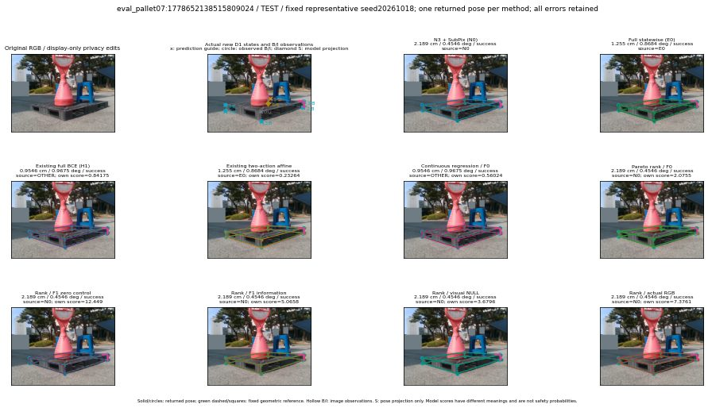

실선은 반환 자세, 초록 점선은 고정 기하 참조입니다. S는 영상 관측이 아닙니다. 점수는 모델별 의미가 다르며 보정된 안전 확률이 아닙니다. 개인정보 처리는 표시 사본에만 적용했습니다.
| 방법·seed | 위치 / 회전 / 공동성공 | 실제 출처 | 선택 후보 | 각 모델 자체 점수 |
|---|---|---|---|---|
| N0 | 2.189 cm / 0.4546 deg / success | N0 | N/A | N/A |
| E0 | 1.255 cm / 0.8684 deg / success | E0 | N/A | N/A |
| E0_REGENERATED | 1.255 cm / 0.8684 deg / success | E0 | E0_REGENERATED | N/A |
| POSEFIX_SUBPIX_PF_ANCHOR | 3.347 cm / 0.1736 deg / success | OTHER | N/A | N/A |
| POSEFIX_SUBPIX_YOLO_ANCHOR | 3.343 cm / 0.1894 deg / success | OTHER | N/A | N/A |
| D1_H1_MLP_s20261018 | 0.9546 cm / 0.9675 deg / success | OTHER | G10/ORIGINAL_WD/selected | 0.8417491912841797 |
| D1_H1_MLP_s20261019 | 0.9546 cm / 0.9675 deg / success | OTHER | G10/ORIGINAL_WD/selected | 0.8482047319412231 |
| D1_H1_MLP_s20261020 | 0.9546 cm / 0.9675 deg / success | OTHER | G10/ORIGINAL_WD/selected | 0.6170456409454346 |
| D1_H1_PAIR_MLP_s20261018 | 1.255 cm / 0.8684 deg / success | E0 | E0_REGENERATED | -0.4462226629257202 |
| D1_H1_PAIR_MLP_s20261019 | 1.255 cm / 0.8684 deg / success | E0 | E0_REGENERATED | -0.037329744547605515 |
| D1_H1_PAIR_MLP_s20261020 | 1.255 cm / 0.8684 deg / success | E0 | E0_REGENERATED | 0.430899977684021 |
| D1_H1_PAIR_ROLE_AFFINE_s20261018 | 1.255 cm / 0.8684 deg / success | E0 | E0_REGENERATED | 0.23263880610466003 |
| D1_H1_PAIR_ROLE_AFFINE_s20261019 | 1.255 cm / 0.8684 deg / success | E0 | E0_REGENERATED | 0.32180848717689514 |
| D1_H1_PAIR_ROLE_AFFINE_s20261020 | 1.255 cm / 0.8684 deg / success | E0 | E0_REGENERATED | 0.16681796312332153 |
| R_CONT_F0_s20261018 | 0.9546 cm / 0.9675 deg / success | OTHER | G10/ORIGINAL_WD/selected | 0.5602350234985352 |
| R_CONT_F0_s20261019 | 0.9546 cm / 0.9675 deg / success | OTHER | G10/ORIGINAL_WD/selected | 0.6392937898635864 |
| R_CONT_F0_s20261020 | 0.9546 cm / 0.9675 deg / success | OTHER | G10/ORIGINAL_WD/selected | 0.645963191986084 |
| R_ORDER_F0_s20261018 | 2.189 cm / 0.4546 deg / success | N0 | N0 | 2.0755467414855957 |
| R_ORDER_F0_s20261019 | 0.9546 cm / 0.9675 deg / success | OTHER | G10/ORIGINAL_WD/selected | -1.9193065166473389 |
| R_ORDER_F0_s20261020 | 0.9546 cm / 0.9675 deg / success | OTHER | G10/ORIGINAL_WD/selected | -3.8045244216918945 |
| R_ORDER_F1_ZERO_s20261018 | 2.189 cm / 0.4546 deg / success | N0 | N0 | 12.44878101348877 |
| R_ORDER_F1_ZERO_s20261019 | 0.9546 cm / 0.9675 deg / success | OTHER | G10/ORIGINAL_WD/selected | -1.6946349143981934 |
| R_ORDER_F1_ZERO_s20261020 | 0.9546 cm / 0.9675 deg / success | OTHER | G10/ORIGINAL_WD/selected | 4.7847466468811035 |
| R_ORDER_F1_s20261018 | 2.189 cm / 0.4546 deg / success | N0 | N0 | 5.0658392906188965 |
| R_ORDER_F1_s20261019 | 2.189 cm / 0.4546 deg / success | N0 | N0 | 6.51369571685791 |
| R_ORDER_F1_s20261020 | 0.9546 cm / 0.9675 deg / success | OTHER | G10/ORIGINAL_WD/selected | 2.4744961261749268 |
| V_ORDER_NULL_s20261018 | 2.189 cm / 0.4546 deg / success | N0 | N0 | 3.679565668106079 |
| V_ORDER_NULL_s20261019 | 2.189 cm / 0.4546 deg / success | N0 | N0 | 1.8768353462219238 |
| V_ORDER_NULL_s20261020 | 0.9546 cm / 0.9675 deg / success | OTHER | G10/ORIGINAL_WD/selected | 4.398616313934326 |
| V_ORDER_RGB_s20261018 | 2.189 cm / 0.4546 deg / success | N0 | N0 | 7.376105308532715 |
| V_ORDER_RGB_s20261019 | 2.189 cm / 0.4546 deg / success | N0 | N0 | 2.3966915607452393 |
| V_ORDER_RGB_s20261020 | 2.189 cm / 0.4546 deg / success | N0 | N0 | -6.892168998718262 |